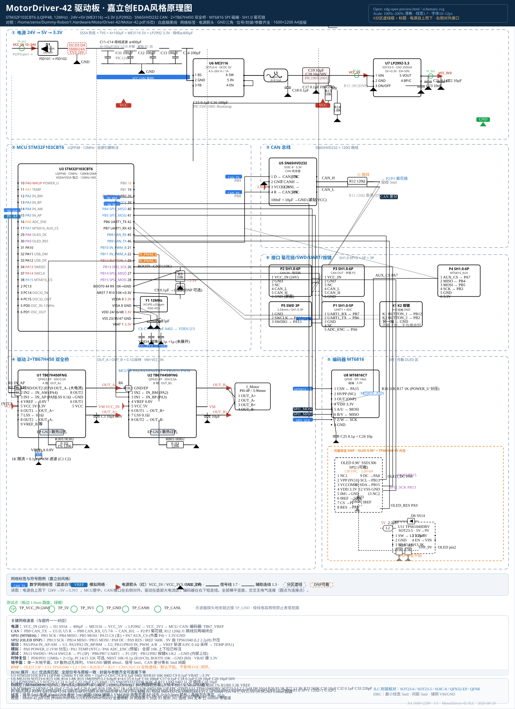
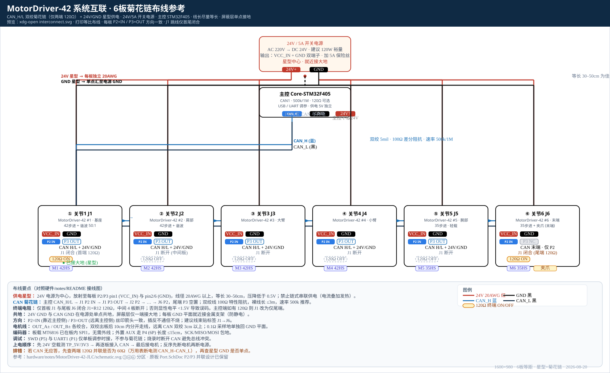

xdg-open preview.htmlxdg-open hardware/notes/MotorDriver-42-JLC/preview.html
xdg-open hardware/notes/MotorDriver-42-JLC/schematic.svg
xdg-open hardware/notes/MotorDriver-42-JLC/interconnect.svg
firefox preview.html &
xviewer schematic.svg &
xmllint --noout *.svg && echo ok

Ctrl+0 复位。
STM32F103CBT6 ME3116 LP2992-3.3 SN65HVD232 TB67H450FNG MT6816 SH1.0-6P），网络名按 VCC_IN/VCC_5V/VCC_3V3/CAN_H/L/SPI1_.../IN_*/PWM 保持一致 → 工具→设计检查→更新PCB（4层 1oz，VM 40mil，CAN 差分 5mil）。

R12 120Ω 闭合（J1 跳线），中间 4 板断开；P2=IN / P3=OUT 方向一致，尾板 P3 空置。详见图内图例与 README 第 6 节。CAN_H – CAN_L 应为 ≈60Ω（两端 120Ω 并联）；若为 40Ω 或 120Ω 说明终端数量错误；再查星型 GND 是否单点。README.md — 中文说明（功能/模块/网络表/差异/导入/预览）schematic.svg — 嘉立创风格原理图 1600×2200（6分区）interconnect.svg — 系统互联 1600×980（6板菊花链+星型）preview.html — 本预览容器（内嵌两图 + 缩放）tools/gen_schematic.c — C11 生成器（可选，校验一致性）hardware/notes/MotorDriver-42-JLC/ 下，不改上游 ~/Dummy-Robot，零 Python。xmllint --noout schematic.svg interconnect.svg && echo okls -lh hardware/notes/MotorDriver-42-JLC/head -20 schematic.svgwc -c schematic.svg interconnect.svg preview.htmlgcc -std=c11 -O2 -o /tmp/gen_schematic tools/gen_schematic.c && /tmp/gen_schematic > /tmp/check.svg && xmllint --noout /tmp/check.svg && echo gen ok